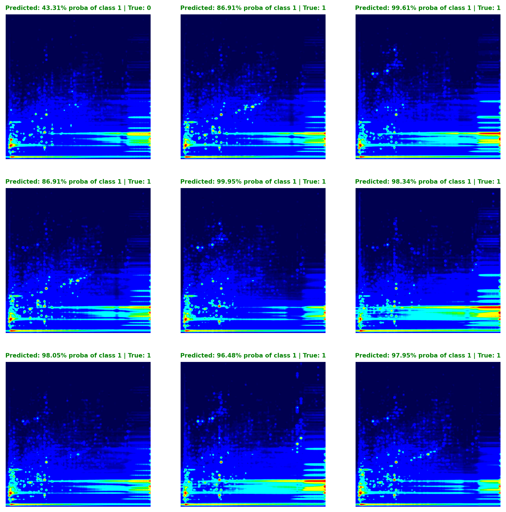

Adam Cseresznye
Scientific Output
Articles
Projects
Categories
All
(8)
Belgian Housing Market Insights
(5)
CP-Seeker Post-Processing App
(1)
DeepLCMS
(1)
Rust
(1)
Projects
Peek My Home Price Part-5: Fine tuning
Belgian Housing Market Insights
In Part 4, we established a robust cross-validation strategy to consistently assess our model’s performance across multiple data folds. We also identified and managed…
Nov 24, 2024
Adam Cseresznye
Peek My Home Price Part-4: Feature engineering
Belgian Housing Market Insights
In Part 3, we looked at the significance of features in the initial scraped dataset using both the
feature_importances_
method of CatBoostRegressor and SHAP values. We…
Nov 23, 2024
Adam Cseresznye
Peek My Home Price Part-3: Feature selection
Belgian Housing Market Insights
In Part 2, we looked into some crucial sample pre-processing steps before modeling, establishing the required pipeline for data processing, evaluating various algorithms…
Nov 22, 2024
Adam Cseresznye
Peek My Home Price Part-2: Building a baseline model
Belgian Housing Market Insights
In the preceding section, our emphasis was on establishing a fundamental understanding of our data through characterizing the cleaned scraped dataset. We dived into feature…
Nov 21, 2024
Adam Cseresznye
Peek My Home Price Part-1: Characterizing the data
Belgian Housing Market Insights
Welcome to
Peek My Home Price
, a project, that dives into the key factors that influence real estate property prices in Belgium. Our ultimate goal with this project is to…
Nov 20, 2024
Adam Cseresznye
Chromascope: A lightweight GUI for mass spectrometry data analysis
Rust
Have you ever needed to quickly review mass spectrometry data stored in mzML format but struggled to find software that was both fast and efficient? You’re not alone—this…
Oct 11, 2024
Adam Cseresznye

DeepLCMS: A framework that leverages transfer learning for the classification of pseudo images in mass spectrometry-based analysis
DeepLCMS
Welcome to DeepLCMS, a project that combines mass spectrometry analysis with the power of deep learning models!
Dec 23, 2023
Adam Cseresznye
Streamlining Data Wrangling with the CP-Seeker Post-Processing App
CP-Seeker Post-Processing App
Welcome to the CP-Seeker Post-Processing App! This application is designed to streamline the organization of CP-Seeker outputs, simplifying additional quantitation steps…
Nov 13, 2023
Adam Cseresznye
No matching items